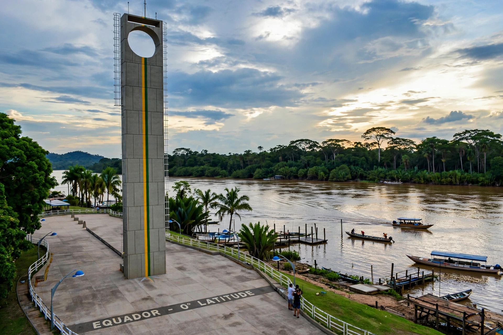

Macapá
Macapá is the capital of the Brazilian state of Amapá, at the mouth of the Amazon River on the Equator. It is famous for the Marco Zero monument marking the equator line — which also passes through the Zerão football stadium, where teams can play in different hemispheres — and for the great Fortaleza de São José de Macapá.
| Country | Brazil |
|---|---|
| State | Amapá |
| Founded | 4 February 1758 |
| Population | about 440,000 |
| Location | On the Equator, Amazon estuary |

History
Macapá grew around a Portuguese fort begun in the 1680s; the massive Fortaleza de São José was built between 1764 and 1782 to guard the Amazon mouth. The town was formally founded in 1758. Amapá became a state in 1988, with Macapá as its capital.
Geography and access
Macapá has no road connection to the rest of Brazil; access is by air or by boat along the Amazon. The city sits just north of the river's mouth, and the equinox phenomenon at Marco Zero — the sun aligned over the equator line — draws visitors in March and September.
Economy
The economy involves river trade, fishing, açaí and timber products, mining in the state's interior, and public administration.